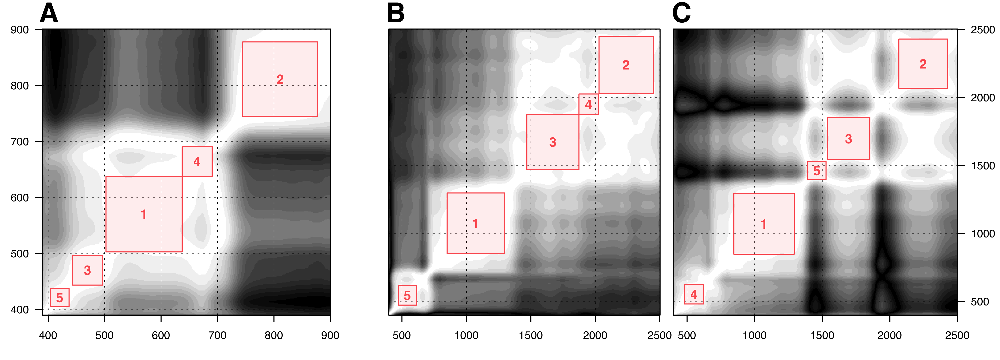

6 Technical description of the modelling
In this chapter, the focus lies on exploring the process of modelling crop nitrogen at both the leaf and canopy levels. To guarantee a just and impartial comparison of the various modelling techniques, all models were provided with identical data — insofar they can make use of it. Furthermore, a machine learning paradigm was employed not solely for the training of machine learning models, but also for all models involved. As a result, certain parameters of the hand-crafted feature approach or the radiative transfer modelling approach were considered as hyperparameters and selected through cross-validation (this will be explained in more detail in section 6.2).
An extensive comparison was carried out, examining a total of 23 different models for their effectiveness. It is relevant to acknowledge that there is a considerable overlap among some of these models. A comprehensive list of the evaluated models can be found in table 6.1, where the method names in the third column are consistently used in subsequent plots and tables to simplify referencing and interpreting the results.
| Approach | Group | Method |
|---|---|---|
| Hand-crafted features | Single vegetation indices | NDVI NDRE EVI GCI GNDVI MCARI RECI TCARI WDRVI R434 |
| Stepwise selection | Combined vegetation indices Recursive feature selection Square feature selection |
|
| Machine learning | Regularized least squares | Lasso Ridge Elastic net |
| Dimensionality reduction | Principal component Partial least squares |
|
| Tree-based learning | Random forests Extreme gradient boosting Cubist |
|
| Radiative transfer modelling | Leaf-level Canopy-level |
Prospect Pro Less Less + interpolation |
6.1 Modelling with hand-crafted features
This section presents the approaches taken to model crop nitrogen by employing vegetation indices. Ten relevant vegetation indices were computed according to the equations specified in table 2.1. While a myriad of vegetation indices exist to model various plant traits, the focus in this thesis was placed on indices that have been utilized for modelling crop nitrogen in scientific literature, as documented by Herrmann et al. (2010) and Tian et al. (2011). Upon calculating the vegetation indices, a simple linear regression model was fitted using ordinary least squares regression. Consequently, every model within the single vegetation indices group in table 6.1 has only two parameters: an intercept (\(\beta_0\)) and a slope (\(\beta_1\)).
Moreover, multiple linear regression models were evaluated, with all of the vegetation indices initially available. To prevent overfitting, stepwise selection was employed to choose a suitable subset from all the vegetation indices. Utilizing the Bayesian information criterion (Equation 3.3 with \(k = \ln n\)) resulted in superior model performance compared to using the Akaike information criterion. The stepwise regression was executed with the step function from the R package stats (R Core Team 2022), where sequential replacement was the specific strategy of choice (direction = "both").
Stepwise selection was also employed as a strategy to identify a suitable subset of bands for a multiple linear model. However, this approach was only used after implementing other algorithms that initially chose a smaller subset of bands from the original data. This was due to the declining performance of stepwise selection as the number of variables added to the model increases (Hastie et al. 2017). Consequently, two algorithms that generate a prior subset of bands were examined in the context of this thesis: the recursive feature selection algorithm and the square feature selection algorithm. Both aim to identify bands that exhibit minimal correlation with one another, and both rely on the covariance matrix (\(\boldsymbol \Sigma\)) of the z-score normalized data for this purpose.
The recursive feature selection algorithm is a straightforward method that iteratively selects bands with the highest pairwise covariance from \(\boldsymbol \Sigma\), eliminating the one with a higher shared covariance among all other bands. This process is repeated until the dataset is reduced to the desired \(d\) dimensions. To refine this approach, \(d\) was treated as a hyperparameter and chosen using cross-validation (Table 6.2).

On the other hand, the square feature selection algorithm seeks to identify a square subset centred on the diagonal of \(\boldsymbol \Sigma\), with the constraint that the square may only contain covariance values larger than a specific threshold \(s\) (Figure 6.1). The centre of the largest possible square corresponds to the selected band. All bands within that square are then removed from \(\mathbf X\), and the procedure is repeated \(d\) times to find \(d\) uncorrelated bands. As a result, in this implementation, both \(s\) and \(d\) were treated as hyperparameters that required fine-tuning. The optimal combinations of parameters derived from this fine-tuning process are presented in table 6.2.
6.2 Training the machine learning models
In general, numerous machine learning models possess the flexibility to fit any given data perfectly. However, the ultimate objective is not a perfect fit but to accurately approximate the true data generating function. To prevent overfitting, these models typically employ parameters that regulate their complexity or the scale of estimated parameters. These parameters, referred to as hyperparameters, are distinct from the model’s internal parameters, as they must be explicitly defined. The optimization of hyperparameters plays a crucial role in ensuring the effective performance of machine learning models. To circumvent overfitting, data is typically divided randomly into training and validation sets. Models are calibrated using the training set, while performance metrics are assessed on the validation set. This approach can lead to noisy performance estimates, particularly in smaller datasets, depending on the arbitrary data split. Consequently, cross-validation has become a widely adopted technique, wherein the dataset \(\mathcal D\) is partitioned into \(K\) folds. For each fold \(k \in \{1,2,\dots,K\}\), a model \(f\) is trained based on \(\mathcal D_{\lnot k}\) and validated on \(\mathcal D_{k}\). To further increase the stability of the results, this process may be repeated \(r\) times (Stone 1974). Ultimately, the average performance across all folds and repetitions can be employed to assess the model’s effectiveness.
The optimized hyperparameters for the machine learning models can be found in table 6.2. These models were developed utilizing the statistical software and programming language R, in conjunction with a variety of packages such as stats, caret, pls, randomForest, xgboost, and Cubist (Liaw and Wiener 2002, Chen et al. 2022, Kuhn 2022, Liland et al. 2022, R Core Team 2022, Kuhn and Quinlan 2023).
| Method | Parameter range | LL (Narea) | LL (N%) | CL |
|---|---|---|---|---|
| Recursive feature selection | \(d \in [2,10]\) |
9 | 8 | 4 |
| Square feature selection | \(d \in [2,10]\) \(s \in [0.8,1]\) |
7 0.86 |
7 0.92 |
6 0.91 |
| Lasso | \(\lambda \in [10^{-5},1]\) |
10-5 | 10-5 | 0.0063 |
| Ridge | \(\lambda \in [10^{-5},1]\) |
0.0141 | 10-5 | 0.0063 |
| Elastic-net | \(\lambda \in [10^{-5},1]\) \(\alpha \in [0,1]\) |
10-5 0.94 |
0.001 1 |
0.0398 0.1 |
| Principal components | \(l \in [1,50]\) |
19 | 19 | 5 |
| Partial least squares | \(l \in [1,50]\) |
13 | 16 | 4 |
| Random forest | ntree \(\in [50,5000]\)nodesize \(\in [1,5]\) |
500 3 |
500 3 |
500 5 |
| Extreme gradient boosting | \(\eta \in [0.01,1]\)max_depth \(\in [1,10]\) |
0.3 2 |
0.1 2 |
0.1 1 |
| Cubist | rules \(\in [2,5]\)committees \(\in [1,20]\) |
2 10 |
2 20 |
2 20 |
6.3 Running the radiative transfer models
Establishing the radiative transfer models proved to be the most labour-intensive task among all modelling approaches. This can be attributed to the highly specialized nature of these models, coupled with the scarcity of guidance available for their application, particularly at the canopy level.
Leaf level radiative modelling
At the leaf level, radiative transfer modelling was conducted utilizing Prospect-Pro, which is available as one of the functions incorporated within the R package prospect (Féret and de Boissieu 2022). Generally, the most favourable results were obtained by employing the inversion technique of optimal spectral subdomains, as proposed by Spafford et al. (2021). This method enhances model inversion by concentrating on spectral subdomains for each constituent and maximizing the fit within that range, rather than over the entire spectrum.
| Parameter | Conservative | Relaxed |
|---|---|---|
| Leaf structure parameter | \(N\in[1.5,2.5]\) | \(N\in[1,3]\) |
| Chlorophyll content Carotenoid content Anthocyanin content Tannin content Equivalent water thickness Protein content Carbon-based constituents |
CHL \(\in[0,60]\)CAR \(\in[0,15]\)ANT \(\in[0,7.5]\)BROWN \(= 0\)EWT \(\in[0.004,0.012]\)PROT \(\in[0.0004,0.005]\)CBC \(\in[0.001,0.002]\) |
CHL \(\in[0,80]\)CAR \(\in[0,20]\)ANT \(\in[0,10]\)BROWN \(= 0\)EWT \(\in[0,0.03]\)PROT \(\in[0,0.02]\)CBC \(\in[0,0.02]\) |
| Maximum incident angle | \(\alpha = 40\) | \(\alpha = 40\) |
During the initial modelling phase, relatively restrictive box constraints were imposed on the parameters, meaning that no parameter was permitted to exceed the range specified in table 6.3. Possible correlations among parameters were disregarded for constraining the search space. The conservative parameter range was derived from Camino et al. (2021), who retrieved the same parameters from almonds for detecting Xylella fastidiosa.
Nonetheless, as many parameters retrieved by Prospect-Pro in this phase resided at the lower or upper bounds, the parameter restrictions were relaxed in a subsequent phase. Parameters obtained under relaxed constraints generally resulted in a better alignment between simulated and observed data, as well as improved leaf-level predictions of foliar nitrogen concentration. Interestingly, reduced discrepancies between simulated and observed data did not consistently lead to enhanced nitrogen predictions. For instance, increasing the maximum incident angle \(\alpha\) in Prospect-Pro to \(\alpha = 80^\circ\) decreased the difference between simulated and observed data, but worsened predictions of the foliar nitrogen concentration based on the retrieved parameters. Consequently, the maximum incident angle was set to \(\alpha = 40^\circ\) as proposed by Féret et al. (2008).
After successfully retrieving the plant parameters, they needed to be associated with the measured nitrogen labels. This was accomplished by employing stepwise selection to a multiple linear model, which allowed for the inclusion of all plant parameters as input variables. The fundamental assumption here is that the foliar nitrogen concentration can be modelled as a linear response to the concentrations of chlorophyll and protein.
Canopy level radiative modelling
To model radiative transfer at the canopy level, the ray tracing model Less was adapted. This three-dimensional forest scene simulator offers a freely accessible graphical user interface (GUI) and can be downloaded via the model’s website (https://lessrt.org). Unfortunately, Less does not provide an application programming interface (API), limiting customization possibilities for the simulations.
A virtual scene of an almond tree, where reflectance may interact with neighbouring trees and the soil, was created using a single three-dimensional model of an almond tree. This model was obtained from the cgtrader platform, where it was sold by the anonymous artist XFrog. Less enables users to upload any .obj file and arrange the objects as desired. Thus, a typical orchard scene could be recreated in Less, with a central focus tree surrounded by 24 other trees in a 5 × 5 grid design. The trees were aligned similarly to the average trees in the Westwind orchard, with an inter-row distance of 6.73 m and a distance of 4.56 m between trees along the rows. The generated data cubes had dimensions of 56 × 38 × 200 = 425’600 values, closely corresponding to the average dimensions of the cropped hyperspectral images. The simulated image was specified to be orthographic, akin to the georectified real image (Figure 6.2).

Less requires defining camera settings that closely approximate the actual settings on the day of data capture. In order to recreate the conditions of the data capture, the camera distance to the ground was set at 100 m above ground level. Simulated spectral bands were configured to align with those from the hyperspectral data. The view zenith angle and view azimuth angle were set to 0° and 180°, respectively. The solar zenith angle was set to 20°, while the solar azimuth angle was set to 240°. Sky cloudiness was not considered.
The hyperspectral signatures of leaves in the scene were based on the simulated spectral reflectance and transmittance of Prospect-D. Given that the hyperspectral data did not encompass the short-wave-infrared spectrum, there was no need for Prospect-Pro and its ability to simulate absorption caused by protein. The soil in the simulated scene was assigned the same reflectance as the bare soil in the hyperspectral images of the orchard.
Less generates output files of simulated radiance in the .bsq format, which closely resembles the data captured by the hyperspectral camera. Consequently, the output of Less had to undergo similar processing steps as real observations to obtain comparable results: calculating reflectance from radiance and irradiance, semantically segmenting the hyperspectral image, and ultimately computing the mean reflectance of the bright canopy. As a result, a single simulated hyperspectral image from Less could be reduced to a vector of reflectance data — represented as one row in the generated look-up table.
The look-up table was constructed by running Less for numerous parameter combinations (Table 6.4), with the parameter ranges informed by the retrieved leaf-level ranges. The leaf area index (LAI) was the sole parameter not retrieved by Prospect-D. This parameter was controlled exclusively by the size of the trees in the scene, resulting in a reduced leaf area over the same ground. All generated hyperspectral images were subsequently condensed to their reflectance vectors and stored as rows in a large matrix. This matrix effectively functions as the look-up table, as the exact parameters generating each reflectance entry are known and stored in a separate parameter matrix.
| Parameter | Parameter range |
|---|---|
| Chlorophyll | CHL \(\in \{20, 22.5, 25, 27.5, 30, 32.5, 35, 37.5, 40, 42.5, 45\}\) |
| Anthocyanin | ANT \(\in \{2.75, 3.00, 3.25, 3.5, 3.75\}\) |
| Carotenoid | CAR \(\in \{2.0, 3.0, 4.0, 5.0, 6.0\}\) |
| Carbon-based constituents | CBC \(\in \{0.006, 0.007, 0.008, 0.009, 0.010\}\) |
| Leaf area index | LAI \(\in \{1,2,3,4,5,6,7,8,9,10,11,12,13,14,15 \}\) |
The look-up table \(\mathbf L\) can be used to make a prediction for a single observation \(\mathbf x\) by identifying the closest match between the observed and simulated reflectance based on a specific cost function \(J\). The most direct approach to this involves minimizing the Euclidean norm of the error between the \(i\)th simulation in the look-up table \(\mathbf L_{(i)}\) and the observation \(\mathbf x\).
\[J(i) = \| \mathbf L_{(i)} - \mathbf x \|_2^2 \qquad i^* = \arg \min_{i \in \{1 .. d\}} J(i) \tag{6.1}\]
In this context, \(i\) represents the index of the simulated reflectance, and \(d\) denotes the total number of simulations in the look-up table. To ensure a consistent treatment of the error, it is crucial that both the look-up table and the observed reflectance undergo z-score normalization prior to determining \(i^*\).
A straightforward method for performing regression using the look-up table \(\mathbf L\) involves calculating the cost \(J\) with respect to a single observation for each row in \(\mathbf L\), and then selecting \(i^*\) associated with the lowest cost \(J(i)\) as written in equation 6.1. Given that the parameter matrix is \(\mathbf P\), the retrieved parameters are \(\mathbf P_{(i^*)}\), or the parameters in the \(i^*\)th row of \(\mathbf P\). This implies that the retrieved parameters may only be any combination of those listed in table 6.4, resulting in discrete predictions.
To enable the retrieval of continuous parameters, a hyper-dimensional interpolation must be applied to the look-up table. This involves modelling the cost \(J\) with respect to a single observation as a function of the parameters, an approach known as surrogate modelling (Gramacy 2020). Gaussian processes would be the most mathematically elegant surrogate model; however, due to their computational inefficiency, a multicubic polynomial surrogate model was chosen instead.1 To facilitate surrogate modelling, a subset of the parameter matrix \(\mathbf P\) was created after computing \(J\), which includes only the closest neighbours of the found parameters \(\mathbf P_{(i^*)}\). The multicubic polynomial was fitted to this subset to model \(J\) as a response to the parameters, allowing for easy minimization and therefore the retrieval of smooth parameters.
Bear in mind that the surrogate model must be re-trained once for each observation, making computational efficiency an important aspect of this step.↩︎